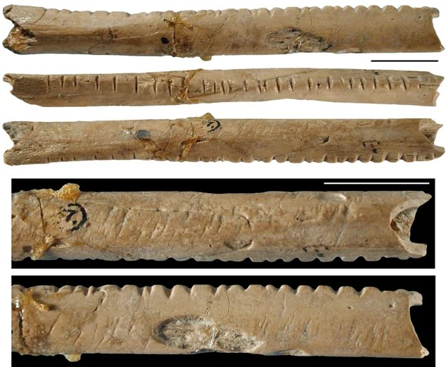
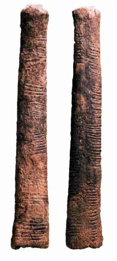

Last session four machines were destroyed by the way a number was written down. Nobody handed us that way of writing. It was invented.
Not one of them was designed by a mathematician sitting down to design a numeral system.
Each was somebody with a practical problem, losing something, and finding a way to stop losing it.
So for each one, the question is: what error did this eliminate?
And the follow-up, which is the more interesting one: what did it cost to eliminate it?
In the morning they go out to graze. In the evening they come back.
Did they all come back?
You cannot count them. Not because you are bad at it.
Because counting does not exist yet. There are no numbers. There is no word for how many you have. Nobody has invented one.
In the morning, as each sheep walks out, drop one pebble into a bag.
In the evening, as each sheep walks back, take one pebble out.
If the bag is empty, they all came home.
Memory is the thing that fails. The pebbles do not need memory. They are the memory.
And notice what it does not need. No numbers. No words for quantity. No arithmetic. Not even the idea that "how many" is a thing you could ask.
One thing standing for another thing. That is the entire invention.
The Latin for pebble is calculus. It is where we get the word calculate. The word is a fossil of a man with a bag of stones.
The bag grows exactly as fast as the flock. It never gets easier.
You cannot say how many you have. You cannot write it down. You cannot send it to anyone.
And you certainly cannot ask what happens if you buy a second flock the same size.
The pebbles record a quantity perfectly and let you do nothing with it.
A baboon's fibula, about six centimetres long, cut with 29 deliberate notches.
Border Cave, in the Lebombo mountains on the border between South Africa and Eswatini. Radiocarbon dating puts it between 42,000 and 44,000 years old.
Twenty-nine is roughly a lunar month, so it may be a calendar. We do not know. What we do know is that somebody was keeping a record on purpose.

Also a baboon's fibula, about ten centimetres, with a sharp piece of quartz still fixed into one end for cutting.
168 notches, but not in a line. In three columns, and inside each column the notches sit in groups.
Somebody stopped making a mark per thing and started arranging the marks.

Same quantity, same marks. One of them you have to count. The other one you can just read.
You cannot look at forty-seven scratches and know it is forty-seven. You can look at nine bundles and two.
So: give the bundle its own symbol. Then give the bundle-of-bundles its own symbol. Keep going.
That idea, taken as far as it will go, is Rome.
One is I. Five gets its own mark, V. Ten, X. Fifty, L. A hundred, C. Five hundred, D. A thousand, M.
It is compact, it is readable, and it was used across an empire for centuries by people running the largest accounting operation in the world.
You were not slow, and you were not out of practice.
In XLVII, the X means ten wherever it sits. Position carries no meaning. So there are no columns.
No columns means there is nothing to carry into.
And if there is nothing to carry into, there is no procedure to follow.
There is no method you failed to remember. There isn't one. Roman arithmetic was done on a counting board and then written down.
A thin wedge for one. A corner wedge for ten. Pressed into wet clay with the end of a reed.
Two marks, and with them they wrote every number they ever needed, including astronomical tables we can still check.
And they grouped, not in tens, but in sixties.
two in the sixties column, forty-seven in the ones column
You have used base sixty every day of your life. Where?
A clock face is a Babylonian artefact. So is a protractor. Four thousand years old, still on your wrist.
Move it. Nothing happens. A symbol carries its whole value with it, so the columns are decoration.
Move it. The value changes by a factor of ten, and the symbol never changed at all.
The mark stopped carrying its own value. Where it sits now carries part of it.
Once a position has a fixed weight, a column can overflow into the one beside it, and that is a carry.
Once carries exist, addition has a rule. Then multiplication has a rule built from addition. Then long division has a rule built from that.
Every arithmetic procedure you know is standing on position.
Rome had no columns, so Rome had no carries, so Rome had no procedures. That is the whole reason you got nowhere ten minutes ago.
Position works because every column has a weight. But if a column is empty, what do you write?
Nothing. You left a gap. And a gap in wet clay looks like a slightly wider gap.
So the same two marks could mean three different numbers.
You had to know from context which one was meant. The marks did not tell you. The clay does not know what its wedges mean.
A dot for one, a bar for five, and a shell for nothing. Stacked vertically, each level worth twenty times the one below.
Independently of anyone, the Maya wrote down a symbol for none, and put it in a column, where it does real work.
There is no mathematical reason for ten. We have ten fingers. That is the entire argument, and it is not a good one.
But in India the three pieces finally came together in one system: ten symbols, position, and a zero that is a number, not just a gap.
In 628, Brahmagupta wrote down the rules for arithmetic with zero.
What to do when you add it, subtract it, multiply by it. And what happens if you divide by it, a question he got wrong, and which is still special-cased in the hardware you will build in this course.
In Baghdad around 825, al-Khwārizmī wrote a book on calculating with these numerals. His name, in Latin, became the word algorithm. The title of another of his books gave us algebra.
Europe resisted for three hundred years. Florence banned the new numerals from account books in 1299. Merchants used them anyway, because the books closed faster.
Columns exist, so there is somewhere for a carry to go, so there is a method, and the method is the same every time, for any two numbers, forever.
You do not have to be clever. You have to follow the steps.
Forty thousand years, six systems, and one survivor that everybody on earth now uses.
Representation: solved.
So is computing solved too?
We have a procedure that needs no cleverness. Surely that is the same as having the answer.
And people get bored, and tired, and distracted, which is the one error nobody in this entire hour has managed to eliminate.
Writing it down and computing with it are two different beasts.